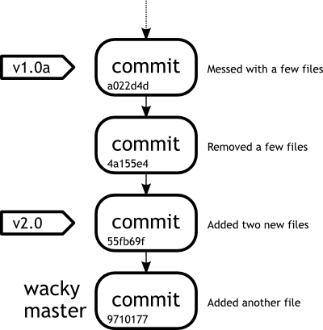

Week 4Day 2 - "Branches galore"
Working with branches
Now we know about branches in general, we should really learn about how to merge changes from one branch into another.
Branches are fantastic for trying new things out and testing ideas, but if those ideas are successful, we need a way of pulling those changes into our master branch.
Of course we could do this the old fashioned way.
We could switch into our wacky branch, do a little development, copy the files somewhere else, switch to our master branch, and paste the files over the top.
Now, this is probably the simplest way of merging possible.
In actual fact, this is not really merging at all.
However one thing that would be lost is the history of how that branch has developed over time.
Sometimes this can be crucial for knowing why certain things were changed during the development process.
Let us take a little look at the command output of a simple merge, explain it a little, and then look at a diagrammatic representation.
john@satsuki:~/coderepo$ git branch
master
* wacky
john@satsuki:~/coderepo$
Firstly we check just to see what branch we are on.
Next we checkout the branch we want our development branch to be merged into.
In this case, we want to merge wacky into master and so we must first checkout the master branch.
Then we can merge in the changes from our wacky branch.
john@satsuki:~/coderepo$ git checkout master
Switched to branch 'master'
john@satsuki:~/coderepo$
Now we can run the actual merge.
john@satsuki:~/coderepo$ git merge wacky
Updating a022d4d..9710177
Fast-forward
another_file | 1 +
my_first_committed_file | 1 -
my_second_committed_file | 1 -
newfile1 | 1 +
newfile2 | 1 +
5 files changed, 3 insertions(+), 2 deletions(-)
create mode 100644 another_file
delete mode 100644 my_first_committed_file
delete mode 100644 my_second_committed_file
create mode 100644 newfile1
create mode 100644 newfile2
john@satsuki:~/coderepo$
We can see that the first line after our git merge command shows us which commit master is the latest common ancestor to both branches and then which commit is the last in our new branch.
In this case we are merging from a022d4d to 9710177.
The line below this is even more important.
This type of merge is called a fast-forward merge.
We have not made any changes to our master branch since we began developing and subsequently, after finishing our development work, we literally only require fast-forwarding the master branch to the same point in time as our wacky one.
Beneath this text, we see more information about just what is included in the merge.
We are going to perform a quick check, to see that we are in fact on the master branch and that the latest log message is the one from the point we last left the wacky branch.
john@satsuki:~/coderepo$ git log -n1
commit 9710177657ae00665ca8f8027b17314346a5b1c4
Author: John Haskins <john.haskins@tamagoyakiinc.koala>
Date: Fri Apr 1 00:16:17 2011 +0100
Added another file
john@satsuki:~/coderepo$ git branch
* master
wacky
john@satsuki:~/coderepo$
Now let us take a quick look at a diagram to see how this change actually affected the commit flow.
We have included tags in this diagram, so that you can see where they point to as well.
|  |
|
Figure 2
Our first merge |
|
This picture should make it clear that the fundamental difference between tags and branches is that whilst the pointer to a branch moves with each commit to that branch, a tag points to a single commit only and never changes, unless forcibly so by the user.
There are a number of tricks that we can employ when using branches.
They are possible because of the super flexible way in which branches are implemented in Git.
As a branch is literally a pointer to a commit, certain operations are available to a user that other systems just can not implement.
However, we should point something out at this point.
Even though we have not yet made any of our repositories public or available to other people, something should always be in the back of your mind.
Allow a few minutes to read the next few paragraphs below.
As someone once said, "With great power, comes great responsibility." Git is hugely powerful.
However, with this power comes a certain level of responsibility.
We are referring here to Git's ability to change history.
If you have watched any science fiction films involving time travel, you should be aware of the difficulties and problems often associated with time travel.
In Git, the same rule applies and the basics of the rule boil down to this: If you have made a commit, or path of commits available, you should never ever change anything in the history of those commits or the commits themselves.
If you are wondering why this is so important, consider this.
If you are making a series of films, and you have already released the first two of a trilogy, you would not put elements in the third one that contradict the history of the others.
You can not just act like the history of the first two did not happen.
Occasionally this happens in the film industry and what is the reaction of the public? People get mad.
Sometimes very mad.
This is what will happen if you do the same with Git.
People who are using your repository will end up with many problems and inconsistencies.
Do NOT do it, ever.
There are ways to revert certain behaviour and we will cover this at a later stage.
Having said this, you should not shy away from the awesome capabilities of Git.
We are going to cover a few situations now which you may find yourself in.
Some of them do alter history, some of them do not.
This is why it is important to have an understanding of how Git works.
It can be your best friend, but it can also cause you issues.
If you take the time to tame the beast, it will be one of the most awesome tools in your developers tool bag and can save your life time and time again.
In the trenches...
"Oh man." The familiar cry of Simon needing something reverberated round the office.
Rob could never understand why he didn't ask for help.
Simon would sit there wallowing out loud until someone could take it no longer and would eventually go over and help him.
"What to do... what to do."
Rob could take it no more.
Simon had been exclaiming now for about five minutes and Rob seemed to either be the only one who wasn't listening to music, or who was getting annoyed.
He rolled his eyes, "What's up Si?"
Simon grinned inanely to himself.
"I just started modifying some files and well ... I don't want to get rid of them ... I'm not 100
"Well, when did you last commit?"
"Just before I started all this work," came the reply.
Rob pointed at Simon's screen.
"You can just create a new branch now and move all the changes into it in one go. You can do it in one command actually."
It is one hundred percent true.
How many times have you been working on something and wished that you could move all the changes you had made to a new safe environment to protect your already good, working code.
Well, the new safe environment we spoke of sounds suspiciously like a branch.
In Git, any changes you have in your working copy can be taken into a new branch by issuing one command.
It is important to note that these changes can also be taken into an existing branch, but you may run into problems if those changes conflict with items already in that branch.
For now let us see how we can take our working copy changes into a new branch to continue development of some wonderful new feature.
We are going to start by making some changes to our newfiles.
john@satsuki:~/coderepo$ echo "and some more changes" >> newfile1
john@satsuki:~/coderepo$ echo "and a new feature" >> newfile2
john@satsuki:~/coderepo$
Now we are going to make a new branch and switch into it.
john@satsuki:~/coderepo$ git checkout -b wonderful
M newfile1
M newfile2
Switched to a new branch 'wonderful'
john@satsuki:~/coderepo$
Did you see that? We managed to create a new branch and move into it in one go.
The git checkout command is usually what we would use to move into a branch, not create it.
When we use the -b parameter, the git checkout command can be used to create a new branch and switch to it in one go.
Notice we have chosen the name wonderful for this particular branch.
There is also a status output below this that shows we have pulled two modifications into this branch, denoted by the letter M in front of the file name.
Now we can commit these changes.
john@satsuki:~/coderepo$ git commit -a -m 'Fantastic new feature'
[wonderful cfbecab] Fantastic new feature
2 files changed, 2 insertions(+), 0 deletions(-)
john@satsuki:~/coderepo$ git diff master wonderful
diff --git a/newfile1 b/newfile1
index 24e7dfa..ef20984 100644
--- a/newfile1
+++ b/newfile1
@@ -1 +1,2 @@
A new file
+and some more changes
diff --git a/newfile2 b/newfile2
index cba16cc..dac4357 100644
--- a/newfile2
+++ b/newfile2
@@ -1 +1,2 @@
Another new file
+and a new feature
john@satsuki:~/coderepo$
After running the diff, we can see the differences between the master and the wonderful branches.
Looking more closely at the hunks, the only differences between the two branches are those that we made before we created our wonderful branch.
We have achieved what we set out to in bringing uncommitted changes from master into wonderful and subsequently committing them.
|
|